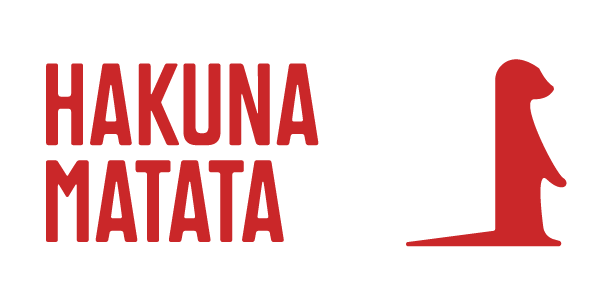

Verschillende logo opdrachten.
Clappy
Clappy! Een logo geinspireerd door iedereens favoriete favoriete knaagdier... De capibara! Dit was 1 van de 2 logo's waarbij we een dier als inspiratie moesten gebruiken. Ik vond dat het logo me erg aan een sportmerk deed denken, vandaar ook de mockup van de schoenendoos.


Hakuna
Hakuna! Het 2de logo dat geinspireerd is op een dier. Deze keer een stokstaartje met tekst dat refereert naar de film "The lion king". Hierbij heb ik wat inspiratie genomen van supreme en er een kledings mockup gemaakt waarvan ik wel vind dat het mooi past.

TinyHouse Design 1
Tinyhouse! Voor deze opdracht was het de bedoeling om meerdere logo's te maken onder de naam tinyhouse. We kregen hierbij een omschrijving waarover het bedrijf exact zou gaan maar voor de rest waren we vrij om te kiezen en te doen zoals we wilden. Dit is persoonlijk mijn favoriete van de 3 door dee subtiele icoon dat ik heb kunnen verwerken in het logo zelf.


TinyHouse Design 2
Nog eens Tinyhouse! Maar deze keer eens iets anderee kleur en aanpak. Het minimalistisch icoon dat mooi op de tekst past en toch wel duidelijk weergeeft waarover het gaat.


TinyHouse Design 3
Tinyhouse x3! Het laatste design van het Tinyhouse trio! Deze keer een kleur dat goed samen werkt met het icoon. Het kleine plukje gras weergeeft het feit dat het letterlijk een tiny home is.


Red Fuel
Bij deze opdracht was het de bedoeling om een bestaand logo te nemen en het opnieuw te maken aan de hand van een op dat moment actueel nieuws. Ik heb de combinatie REDBULL en de gascrisis door Rusland genomen. Ik ben wel vrij tevreden met het resultaat.

Couleur Cafe
Een re-design voor het festival couleur cafe, gemaakt in 2019